Durante la etapa de análisis se desarrolló el Diagrama de Casos de Uso del Sistema de Gestión de Almacenes y Control de Inventarios para la Constructora Ríos Herrera. Este diagrama permitió identificar los actores involucrados, las funcionalidades principales del sistema y las relaciones existentes entre ellas.
Un caso de uso describe una funcionalidad del sistema desde la perspectiva del usuario, mostrando la interacción entre los actores y el sistema para alcanzar un objetivo específico.
El modelado de casos de uso permitió representar de forma gráfica los procesos principales de la empresa, identificando las responsabilidades de cada actor y organizando las funcionalidades del sistema en módulos funcionales para facilitar su comprensión y posterior desarrollo.
Para la construcción del Diagrama de Casos de Uso se emplearon los siguientes elementos, los cuales permiten representar las interacciones entre los actores y las funcionalidades del sistema.
Representa una persona, organización o entidad externa que interactúa con el sistema para realizar una acción.
Se representa mediante una figura humana (monigote).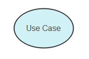
Representa una funcionalidad o servicio proporcionado por el sistema a sus usuarios.
Se representa mediante una elipse u óvalo.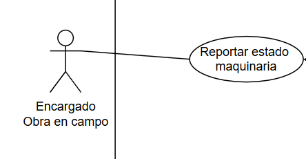
Conecta a un actor con un caso de uso.
Representada mediante una línea continua.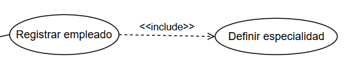
Indica que un caso de uso requiere obligatoriamente otro.
Flecha punteada con la etiqueta «include». La flecha apunta hacia el caso de uso que será incluido.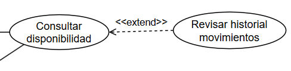
Agrega funcionalidades opcionales o condicionales. La flecha apunta hacia el caso de uso principal que está siendo extendido.
Flecha punteada con la etiqueta «extend».Se puede empezar en modelarlo con papel y lapiz, despues usar esa base para elaborarlo en alguna herramienta para realizar este tipo de diagramas como draw.io, RSA, etc.
Para la elaboración del Diagrama de Casos de Uso se siguió un proceso de análisis que permitió identificar los actores, funcionalidades y relaciones presentes en el sistema.
Se identificaron todas las personas y entidades que interactúan con el sistema, determinando sus responsabilidades dentro de los procesos de almacén, inventario, obras y recursos.
Se analizaron las actividades realizadas por la empresa para determinar qué funciones debía ofrecer el sistema.
Debido a la complejidad y alcance del Sistema los casos de uso identificados fueron organizados en módulos funcionales para facilitar su comprensión y representación.
Cada módulo agrupa funcionalidades relacionadas entre sí, permitiendo una representación más ordenada del sistema.
Una vez identificados los actores y funcionalidades, se establecieron las relaciones necesarias para representar las interacciones y dependencias existentes dentro del sistema.
Estas relaciones permitieron modelar de forma precisa los procesos de negocio y las dependencias existentes entre las distintas funcionalidades del sistema.
Con los actores, funcionalidades y relaciones previamente identificados, se procedió a la construcción de los Diagramas de Casos de Uso utilizando la herramienta Draw.io.
Durante esta etapa se representaron gráficamente las interacciones entre los actores y el sistema, organizando los casos de uso dentro de los módulos funcionales definidos en el análisis.
Como resultado del proceso de modelado se obtuvo un conjunto de Diagramas de Casos de Uso que representan los procesos principales del Sistema.
Los diagramas permiten visualizar las responsabilidades de cada actor, las funcionalidades que ofrece el sistema y las relaciones existentes entre los distintos casos de uso.
Los diagramas desarrollados constituyen la base del análisis funcional del sistema y servirán como referencia para las siguientes etapas del proyecto.
Como resultado del proceso de modelado se obtuvieron seis Diagramas de Casos de Uso que representan los principales procesos del Sistema de Gestión de Almacenes y Control de Inventarios para la Constructora Ríos Herrera.
Este módulo representa los procesos relacionados con la planificación, adquisición y recepción de materiales necesarios para el desarrollo de las obras.
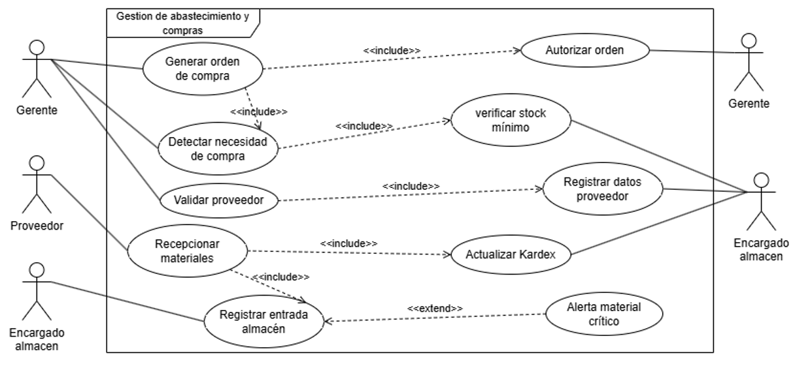
Modela las solicitudes de materiales realizadas por las diferentes obras y el proceso de despacho desde almacén, garantizando el control de los recursos enviados.
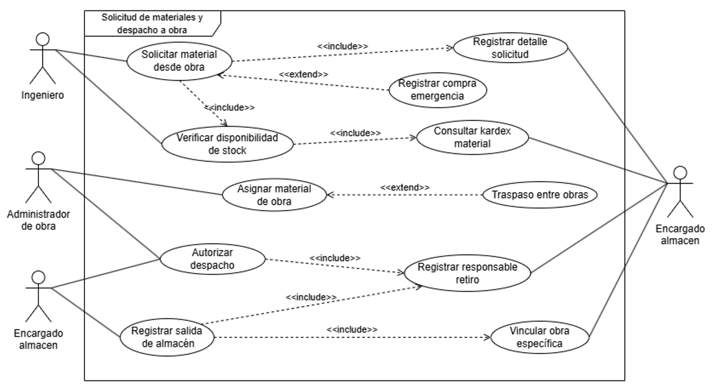
Permite gestionar el inventario de materiales, controlar las entradas y salidas de productos y mantener actualizada la disponibilidad de stock en tiempo real.
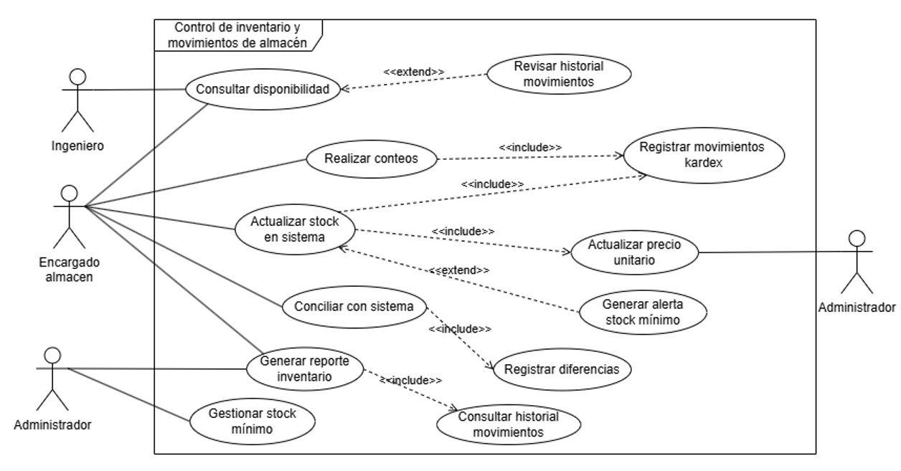
Representa el control de las obras en ejecución, el seguimiento de recursos asignados y el registro de gastos y avances de cada proyecto.
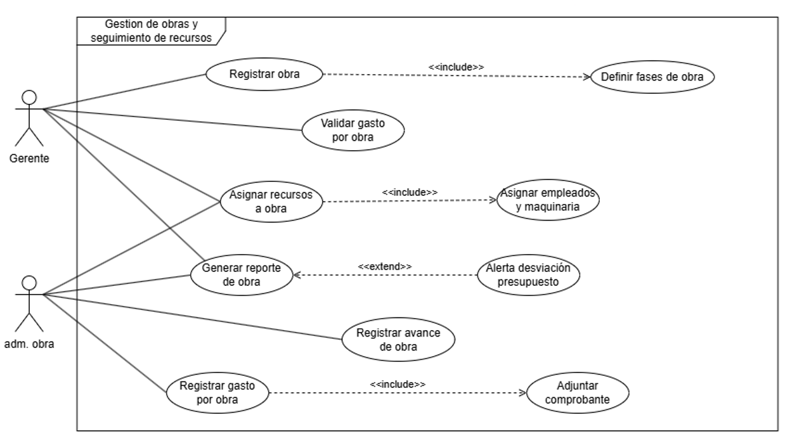
Este módulo permite administrar la información del personal, registrar asistencia, controlar asignaciones y generar reportes relacionados con la productividad de los trabajadores.
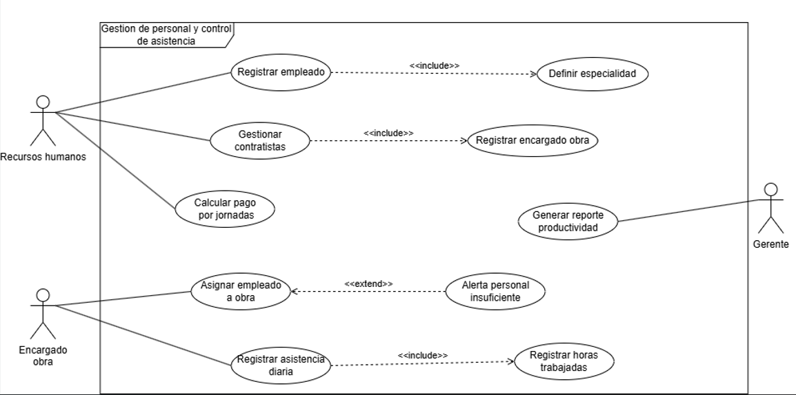
Gestiona la asignación, mantenimiento y seguimiento del estado de la maquinaria utilizada en las obras, además de aspectos relacionados con la seguridad y auditoría del sistema.
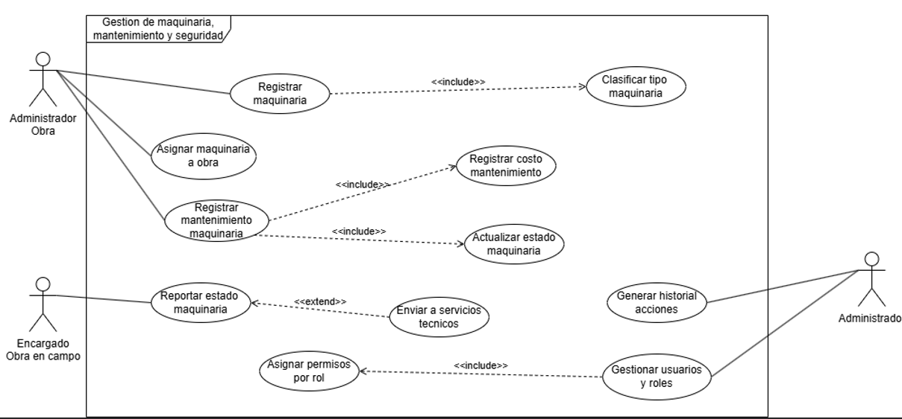
Para la Constructora Ríos Herrera, se ha diseñado un único Modelo de Casos de Uso de Negocio (MCUN) que unifica las operaciones de las sucursales de Sucre y El Alto. Este modelo permite visualizar cómo cooperan los actores, los objetivos estratégicos de la empresa y las reglas de negocio en una sola arquitectura robusta.
Un diagrama de caso de uso de negocio (CUN) es un diagrama de caso de uso en el que el sistema que modela es el área de negocio del mundo real. Ofrece una visión general de los procesos y servicios (CUN) y las entidades que utilizan esos servicios o participan en su implementación.
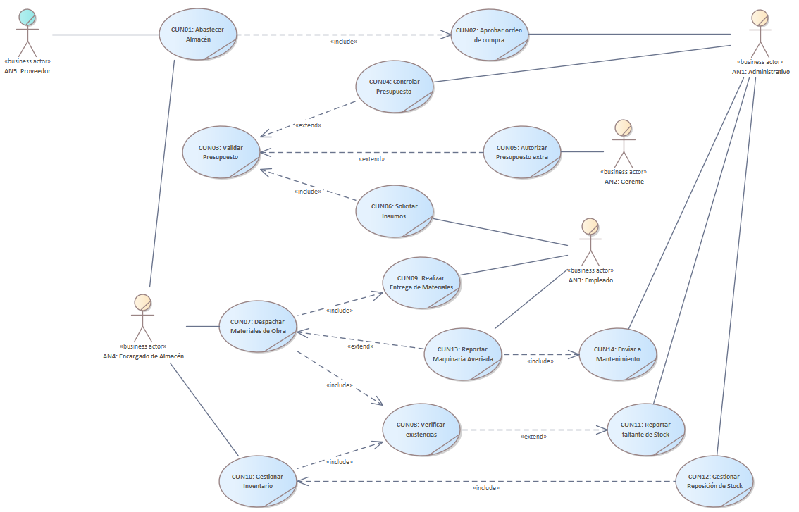
Explicación en el Diagrama: Este objetivo regula la inversión de capital en insumos para evitar compras desmedidas o desvíos de fondos en las sucursales:
<<include>>) pasar por la aprobación formal del actor de negocio AN1: Administrativo en CUN2: Aprobar orden de compra, flujo que finalmente interactúa con el actor externo AN5: Proveedor para el despacho físico de los materiales.<<include>>) el proceso CUN4: Controlar Presupuesto.<<extend>>) condicionalmente hacia CUN3: Validar Presupuesto, subproceso que depende directamente de que el actor de negocio AN2: Gerente ejecute la acción de CUN5: Autorizar Presupuesto extra.Explicación en el Diagrama: Este objetivo asegura el control estricto de los movimientos internos de materiales, garantizando que ningún insumo salga del almacén central sin dejar rastro digital:
<<include>>) la tarea de CUN8: Verificar existencias en el sistema digital antes de proceder físicamente a CUN9: Realizar Entrega de Materiales.Explicación en el Diagrama: Este objetivo actúa como la capa de seguridad operativa e inventario real del proyecto, resolviendo pérdidas por descuido o averías:
<<extend>>) para CUN11: Reportar faltante de Stock y coordinar la compra oportuna mediante CUN12: Gestionar Reposición de Stock</span>.<<extend>>) el flujo ordinario de entrega, forzando la inclusión obligatoria (<<include>>) de la acción CUN14: Enviar a Mantenimiento para bloquear su uso.Es un documento narrativo que describe la secuencia de eventos de un actor que utiliza un sistema para completar un proceso. Son historias o casos de utilización de un sistema; no son exactamente los requerimientos ni las especificaciones funcionales, sino que ejemplifican e incluyen los requerimientos.
Muestra más detalles que uno de alto nivel; suelen ser útiles para alcanzar un conocimiento más profundo de los procesos y de los requerimientos.
| Código | CU-01 | Tipo | Primario | Versión | 1.1 |
| Actores | Gerente (iniciador), Encargado almacén (responsable), Proveedor | ||||
| Propósito | Permitir al Gerente generar una orden de compra formal cuando se detecta la necesidad de adquirir materiales, garantizando la trazabilidad del proceso de abastecimiento. | ||||
| Resumen | El Gerente detecta la necesidad de compra, selecciona los materiales y al proveedor validado, y genera la orden de compra. El sistema incluye la verificación de stock mínimo y la autorización de la orden. | ||||
| Precondiciones | El Gerente debe estar autenticado en el sistema. Los materiales deben estar registrados con stock mínimo definido. | ||||
| Postcondiciones | La orden de compra queda registrada en el sistema con estado 'enviada'. El proveedor queda vinculado a la orden. El stock mínimo queda verificado. | ||||
| Referencias Cruzadas | CU-02 (Solicitar material desde obra), CU-03 (Control de inventario) | ||||
| Acciones del Actor | Respuesta del Sistema |
|---|---|
| El Gerente accede al módulo de abastecimiento y selecciona 'Generar orden de compra'. | El sistema muestra el formulario de nueva orden de compra con los materiales disponibles. |
| El Gerente selecciona los materiales requeridos e ingresa las cantidades necesarias. | El sistema ejecuta <<include>> Detectar necesidad de compra: verifica automáticamente qué materiales están bajo el stock mínimo y los resalta. |
| El sistema verifica el stock de cada material seleccionado. | |
| El sistema ejecuta <<include>> Verificar stock mínimo: compara las existencias actuales contra los mínimos configurados y confirma la necesidad de compra. | |
| El Gerente selecciona al proveedor de la lista de proveedores registrados. | El sistema ejecuta <<include>> Validar proveedor y llama a <<include>> Registrar datos proveedor, mostrando nombre, NIT, contacto y rubro del proveedor seleccionado. |
| El Gerente revisa los datos de la orden y confirma la generación. | El sistema ejecuta <<include>> Autorizar orden: registra número de orden, fecha, monto estimado, materiales y proveedor, y cambia el estado a 'autorizada'. |
| El Encargado de almacén recibe y registra físicamente los materiales al llegar. | El sistema ejecuta <<include>> Recepcionar materiales y llama a <<include>> Actualizar Kardex: registra la entrada con fecha, cantidad, proveedor y número de factura. |
| El Encargado confirma la recepción completa en el sistema. | El sistema registra la entrada al almacén. Si algún material sigue bajo el mínimo, ejecuta <<extend>> Alerta material crítico notificando al Gerente. |
| Código | CU-02 | Tipo | Primario | Versión | 1.1 |
| Actores | Ingeniero (iniciador), Administrador de obra, Encargado almacén (responsable) | ||||
| Propósito | Permitir al Ingeniero residente solicitar materiales desde la obra de forma digital, garantizando la autorización del despacho y la trazabilidad de la salida vinculada a una obra específica. | ||||
| Resumen | El Ingeniero solicita materiales desde la obra. El sistema verifica disponibilidad en stock. El Administrador autoriza el despacho. El Encargado de almacén registra la salida y la vincula a la obra correspondiente. | ||||
| Precondiciones | El Ingeniero debe estar autenticado y asignado a una obra activa. Los materiales deben estar registrados con stock disponible en el sistema. | ||||
| Postcondiciones | La solicitud queda registrada con detalle completo. La salida queda vinculada a la obra específica en el kardex. El stock se descuenta del almacén. El responsable del retiro queda registrado. | ||||
| Referencias Cruzadas | CU-01 (Generar orden de compra), CU-03 (Control de inventario) | ||||
| Acciones del Actor | Respuesta del Sistema |
|---|---|
| El Ingeniero accede al módulo de solicitudes y crea una nueva solicitud de material. | El sistema muestra el formulario con las obras activas asignadas al Ingeniero y el catálogo de materiales disponibles. |
| El Ingeniero selecciona la obra destino, el material y la cantidad requerida. | El sistema ejecuta <<include>> Registrar detalle solicitud: guarda código de material, cantidad, unidad de medida, obra y fecha de solicitud. |
| El Ingeniero envía la solicitud para revisión. | El sistema ejecuta <<include>> Verificar disponibilidad de stock y llama a <<include>> Consultar kardex material: compara la cantidad solicitada con las existencias actuales. |
| El Administrador de obra recibe la notificación y revisa la solicitud. | El sistema muestra el detalle de la solicitud con confirmación de disponibilidad y datos del material requerido. |
| El Administrador autoriza el despacho y designa al responsable del retiro. | El sistema ejecuta <<include>> Autorizar despacho y llama a <<include>> Registrar responsable retiro: guarda el nombre del trabajador que retirará el material. |
| El Encargado de almacén entrega el material y confirma la salida en el sistema. | El sistema ejecuta <<include>> Registrar salida de almacén y llama a <<include>> Vincular obra específica: asocia el movimiento a la obra y actualiza el kardex en tiempo real. |
| El Administrador confirma la asignación del material a la obra. | El sistema ejecuta <<include>> Asignar material de obra: registra el material como asignado a la obra. Si hay excedente en otra obra, sugiere <<extend>> Traspaso entre obras. |
| Código | CU-03 | Tipo | Primario | Versión | 1.1 |
| Actores | Encargado almacén (iniciador), Ingeniero, Administrador (responsable) | ||||
| Propósito | Permitir al Encargado de almacén realizar el conteo físico de materiales, conciliar diferencias con el sistema, actualizar el stock y generar reportes de inventario para garantizar la exactitud de las existencias. | ||||
| Resumen | El Encargado realiza el conteo físico mensual, ingresa las cantidades al sistema y este concilia diferencias. Se actualiza el kardex, se gestiona el stock mínimo y se generan reportes. | ||||
| Precondiciones | El Encargado debe estar autenticado. Deben existir materiales registrados en el sistema. El período de conteo debe estar habilitado por el Administrador. | ||||
| Postcondiciones | El inventario físico queda conciliado con el sistema. Las diferencias quedan registradas con fecha y responsable. El kardex se actualiza. Las alertas de stock bajo quedan generadas para materiales críticos. | ||||
| Referencias Cruzadas | CU-01 (Generar orden de compra), CU-02 (Solicitar material desde obra) | ||||
| Acciones del Actor | Respuesta del Sistema |
|---|---|
| El Ingeniero consulta la disponibilidad de materiales para planificación. | El sistema muestra el stock disponible por material. Si se requiere historial detallado, ejecuta <<extend>> Revisar historial movimientos. |
| El Encargado de almacén inicia el proceso de conteo físico mensual. | El sistema genera la lista de todos los materiales registrados con sus cantidades actuales según el kardex. |
| El Encargado ingresa las cantidades físicas contadas material por material. | El sistema ejecuta <<include>> Realizar conteos y llama a <<include>> Registrar movimientos kardex: guarda la cantidad física, fecha y responsable del conteo. |
| El Encargado finaliza el ingreso y solicita la conciliación. | El sistema ejecuta <<include>> Actualizar stock en sistema: compara cantidades físicas con el registro digital y calcula las diferencias. |
| El Encargado revisa las diferencias y confirma o justifica cada una. | El sistema ejecuta <<include>> Conciliar con sistema y llama a <<include>> Registrar diferencias: guarda la variación con motivo y responsable. |
| El Encargado confirma la conciliación y solicita actualización de precios. | El sistema ejecuta <<include>> Actualizar precio unitario con los últimos precios de compra registrados en el kardex. |
| El Administrador revisa los niveles y ajusta los mínimos si es necesario. | El sistema ejecuta <<include>> Gestionar stock mínimo. Si algún material está bajo el umbral definido, ejecuta <<extend>> Generar alerta stock mínimo notificando al Gerente. |
| El Ingeniero o Administrador solicita el reporte de inventario. | El sistema ejecuta <<include>> Generar reporte inventario y llama a <<include>> Consultar historial movimientos: genera reporte con materiales más usados, agotados y valorización total. |
| Código | CU-04 | Tipo | Primario | Versión | 1.1 |
| Actores | Gerente (iniciador), Administrador de obra (responsable) | ||||
| Propósito | Permitir al Gerente registrar obras con sus fases y presupuesto, y al Administrador de obra asignar recursos, registrar avances y gastos, para mantener el control financiero y operativo de cada proyecto. | ||||
| Resumen | El Gerente crea la obra con sus fases y presupuesto. El Administrador asigna empleados, materiales y maquinaria. Se registran avances diarios y gastos con comprobantes. | ||||
| Precondiciones | El Gerente debe estar autenticado con rol de administración. Los empleados, materiales y maquinaria a asignar deben estar previamente registrados en el sistema. | ||||
| Postcondiciones | La obra queda registrada con fases (técnica, civil, acabados), fechas y presupuesto. Los recursos quedan vinculados a la obra. Los avances y gastos quedan registrados con sus comprobantes. | ||||
| Referencias Cruzadas | CU-02 (Solicitar material desde obra), CU-05 (Gestión de personal), CU-06 (Gestión de maquinaria) | ||||
| Acciones del Actor | Respuesta del Sistema |
|---|---|
| El Gerente accede al módulo de obras y crea una nueva obra. | El sistema solicita: nombre, ubicación (Sucre o El Alto), presupuesto total, fecha inicio, fecha fin e ingeniero responsable. |
| El Gerente confirma los datos de la obra. | El sistema ejecuta <<include>> Registrar obra y llama a <<include>> Definir fases de obra: crea automáticamente las fases Técnica, Civil y Acabados con sus hitos de cronograma. |
| El Gerente valida el presupuesto asignado a la obra. | El sistema ejecuta <<include>> Validar gasto por obra: registra el presupuesto aprobado y habilita el seguimiento de desviaciones. |
| El Administrador de obra asigna los recursos necesarios. | El sistema ejecuta <<include>> Asignar recursos a obra y llama a <<include>> Asignar empleados y maquinaria: vincula personal por especialidad y equipos según disponibilidad. |
| El Administrador registra el avance diario de la obra. | El sistema ejecuta <<include>> Registrar avance de obra: actualiza el porcentaje por fase y calcula el cumplimiento respecto al cronograma. |
| El Administrador registra los gastos incurridos con sus comprobantes. | El sistema ejecuta <<include>> Registrar gasto por obra y llama a <<include>> Adjuntar comprobante: registra tipo de gasto (flete, materiales, viáticos), monto y factura. |
| El Gerente solicita el reporte del estado financiero de la obra. | El sistema ejecuta <<include>> Generar reporte de obra: muestra avance vs cronograma y presupuesto vs gasto real. Si la desviación supera el 10%, ejecuta <<extend>> Alerta desviación presupuesto. |
| Código | CU-05 | Tipo | Primario | Versión | 1.1 |
| Actores | Recursos Humanos (iniciador), Encargado de obra, Gerente (responsable) | ||||
| Propósito | Permitir a Recursos Humanos registrar empleados y contratistas, asignarlos a obras y calcular pagos por jornada. Al Encargado de obra registrar la asistencia diaria y horas trabajadas para eliminar el uso de planillas físicas. | ||||
| Resumen | Recursos Humanos registra al personal con su especialidad. El Encargado de obra los asigna a la obra y registra su asistencia diaria. El sistema calcula las horas trabajadas y los pagos por jornada. | ||||
| Precondiciones | Las obras activas deben estar registradas en el sistema. El catálogo de especialidades debe estar configurado. El Encargado debe estar autenticado y asignado a una obra activa. | ||||
| Postcondiciones | El empleado queda registrado con su especialidad y tipo de contrato. La asignación a obra queda vinculada con fechas y rol. La asistencia diaria queda registrada con horas trabajadas. El cálculo de jornales queda disponible para pagos. | ||||
| Referencias Cruzadas | CU-04 (Gestión de obras y recursos), CU-06 (Gestión de maquinaria y seguridad) | ||||
| Código | CU-06 | Tipo | Secundario | Versión | 1.1 |
| Actores | Administrador Obra (iniciador), Encargado de obra en campo, Administrador del sistema (responsable) | ||||
| Propósito | Permitir registrar y controlar la maquinaria asignada a obras, registrar mantenimientos preventivos y correctivos, y gestionar usuarios con roles y permisos diferenciados para garantizar la trazabilidad y seguridad del sistema. | ||||
| Resumen | El Administrador de obra registra y asigna maquinaria. El Encargado en campo reporta el estado de los equipos. El Administrador del sistema gestiona usuarios, roles y permisos. Todo movimiento queda registrado en el historial de acciones para auditoría. | ||||
| Precondiciones | Las obras activas deben estar registradas. El catálogo de tipos de maquinaria debe estar configurado. Los roles y permisos base deben estar definidos en el sistema. | ||||
| Postcondiciones | La maquinaria queda registrada con tipo, estado y clasificación. Los mantenimientos quedan registrados con costo y responsable. Los usuarios quedan configurados con roles y permisos diferenciados. El historial de acciones queda disponible para auditoría. | ||||
| Referencias Cruzadas | CU-04 (Gestión de obras y recursos), CU-05 (Gestión de personal) | ||||
Constructora Ríos Herrera — Casos de Uso Expandido v1.1 | Sistema de gestión de almacenes y control de inventarios | Versión 1.1 | Fecha: 08/06/2026